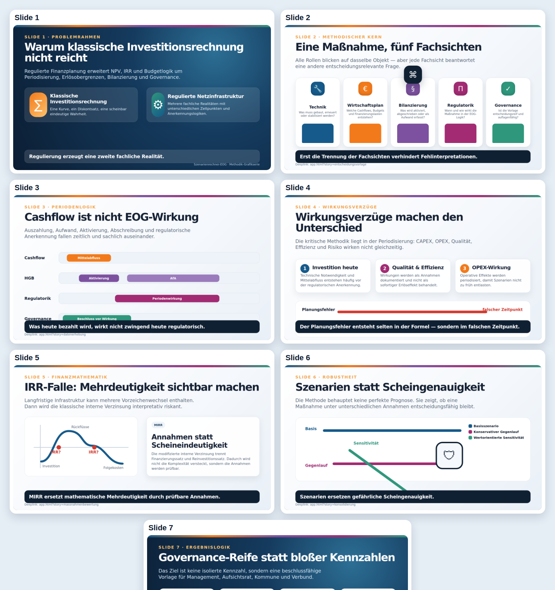

Methodik-Grafikserie: Szenarienrechner-EOG
Diese Grafikserie übersetzt die Methodik des Szenarienrechner-EOG in acht visuelle Arbeitsfolien. Sie ist als Master-Artefakt für BookStack, Präsentationen, LinkedIn-Carousels, Video-Storyboard und Workshop-Unterlagen gedacht.
Primärer Veröffentlichungsort
Primär sollte die Grafikserie im GitHub-Repository versioniert werden. Dort ist sie prüfbar, forkbar, zitierbar und gehört methodisch zum Tool. BookStack sollte die kuratierte Fachveröffentlichung enthalten. stromdao.de eignet sich als kurze Landing-/Teaser-Seite mit Verweis auf Tool, GitHub und BookStack.
Slides
1. Warum klassische Investitionsrechnung nicht reicht
2. Eine Maßnahme, fünf Fachsichten
3. Cashflow ist nicht EOG-Wirkung
4. Wirkungsverzüge machen den Unterschied
5. IRR-Falle: Mehrdeutigkeit sichtbar machen
6. Szenarien statt Scheingenauigkeit
7. Governance-Reife statt bloßer Kennzahlen
8. Schlüsselslide: QR-Code, Startseite und fünf Kernpunkte
App-Deeplinks
- Startseite: https://energychain.github.io/Szenarienrechner-EOG/index.html
- Entscheidungsvorlage: https://energychain.github.io/Szenarienrechner-EOG/app.html?story=entscheidungsvorlage
- Datenerhebung: https://energychain.github.io/Szenarienrechner-EOG/app.html?story=datenerhebung
- Maßnahmenbewertung: https://energychain.github.io/Szenarienrechner-EOG/app.html?story=massnahmenbewertung
- Konsolidierung: https://energychain.github.io/Szenarienrechner-EOG/app.html?story=konsolidierung
- Gremium: https://energychain.github.io/Szenarienrechner-EOG/app.html?story=gremium
Dateien und direkte Artefakte
- Interaktives Online-Karussell / HTML-Slide-Master: Slides wechseln, optionalen Sprechertext einblenden, Voice-over pro Slide abspielen, per Klick groß öffnen, in der Großansicht weiterblättern und die komplette Präsentation im Vollbildmodus mit automatischem Audio-/Slide-Wechsel starten
- YouTube-ready MP4-Video der kompletten Präsentation: 1920×1080, H.264/AAC, mit Voice-over und automatischem Slide-Ablauf
- Video-Preview-Kontaktbogen
- Kontaktbogen als PNG
- Slide 1 als PNG
- Slide 2 als PNG
- Slide 3 als PNG
- Slide 4 als PNG
- Slide 5 als PNG
- Slide 6 als PNG
- Slide 7 als PNG
- Slide 8 als PNG
{kind=link}
{kind=link}
{kind=link}
{kind=link}
{kind=link}
{kind=link}
{kind=link}
{kind=link}
{kind=link}
{kind=link}

Repository-Pfade
docs/visuals/methodik-slide-source.html: HTML-Quelle für die exportierten PNG-Slidesdocs/visuals/methodik-grafikserie.html: interaktiver, druckbarer HTML-Slide-Masterdocs/visuals/methodik-grafikserie.md: redaktionelle Übersichtdocs/visuals/exports/methodik-slide-01.pngbismethodik-slide-08.png: exportierte Einzelgrafiken für BookStack, Social Media und Präsentationendocs/visuals/audio/methodik-slide-01.mp3bismethodik-slide-08.mp3: Voice-over-Dateien für das Online-Karusselldocs/visuals/video/methodik-grafikserie-youtube.mp4: gerendertes YouTube-ready Video der kompletten Präsentationdocs/visuals/video/methodik-grafikserie-youtube-preview.jpg: Video-Preview-Kontaktbogen zur schnellen QAdocs/visuals/exports/startseite-qr.svg: QR-Code zur öffentlichen Startseitescripts/build-methodik-video.mjs: rendert die Video-Datei aus Slide-PNGs und Voice-over-MP3s